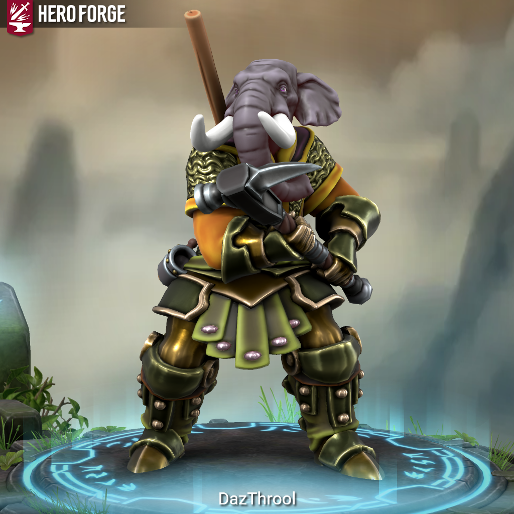

Daz Throol Knight of Rix Cave Protector of the Green Shield Master of the Staff of Throol - Is This Anything?

Meet Daz’Throol, Knight of Rix-Cave, Protector of the Green Shield, Master of the Staff of Throol.
There are people who protect others because they have to. Because it’s their duty, their oath, their job. Daz’Throol does it because he cannot do otherwise. Something in him – something ancient and immovable – simply will not allow the weak to fall while he still stands.
He is calm. Almost unnervingly so. He speaks quietly, moves deliberately, and carries himself with the kind of stillness that makes a room feel safer just by him being in it. He will listen to your problem. He will consider it fully. And if that problem involves something trying to hurt you, he will step in front of it.
He will always step in front of it.
His war pick and the Staff of Throol are tools, not trophies. The Green Shield, which protects him as he protects others, is worn with the ease of something earned. His chain mail covers his torso, plate covers his legs, and in his nose hangs the ring that carries both his holy symbol and the signet of his order – present and visible, a reminder of what he is and who he answers to.
He does not raise his voice. He does not need to. When the calm breaks, you’ll know.
Daz’Throol, Knight of Rix-Cave, Protector of the Green Shield, Master of the Staff of Throol, is a Loxodon Paladin, level 10. He controls the battlefield, absorbs punishment, and keeps his party standing. His presence at the table is that of an anchor: patient, immovable, and absolutely certain of his purpose.
#iTA #isThisAnything #DnD #TTRPG #Homebrew #CharacterIntro #Paladin #Loxodon